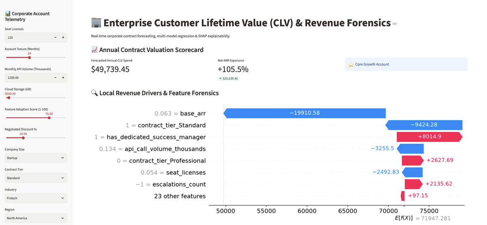

LIVE APPEnterprise Customer Lifetime Value (CLV) & Revenue Forensics
Predicts continuous annual contract spend for enterprise B2B accounts from 20+ usage telemetry signals. Preprocessed with RobustScaler to prevent telemetry volume distortion, benchmarked regularized linear models against an optimized gradient-boosted regressor, and diagnosed errors across a 3-panel residual cockpit. Features live, per-account shap.TreeExplainer waterfall plots displaying dollar-for-dollar revenue drivers.